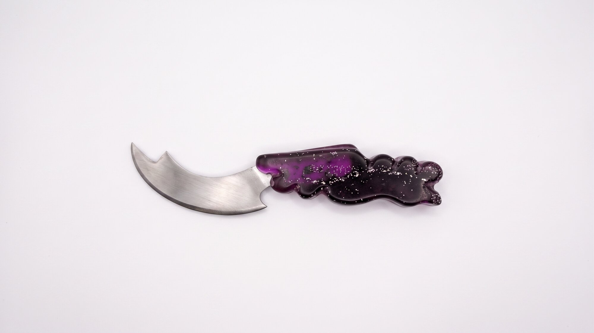
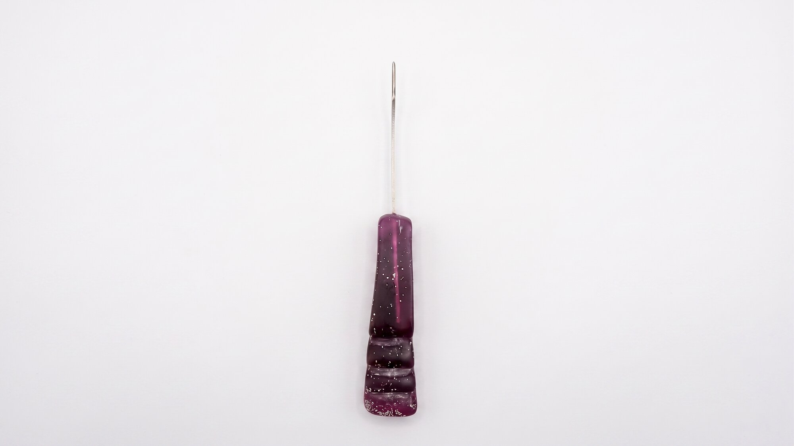
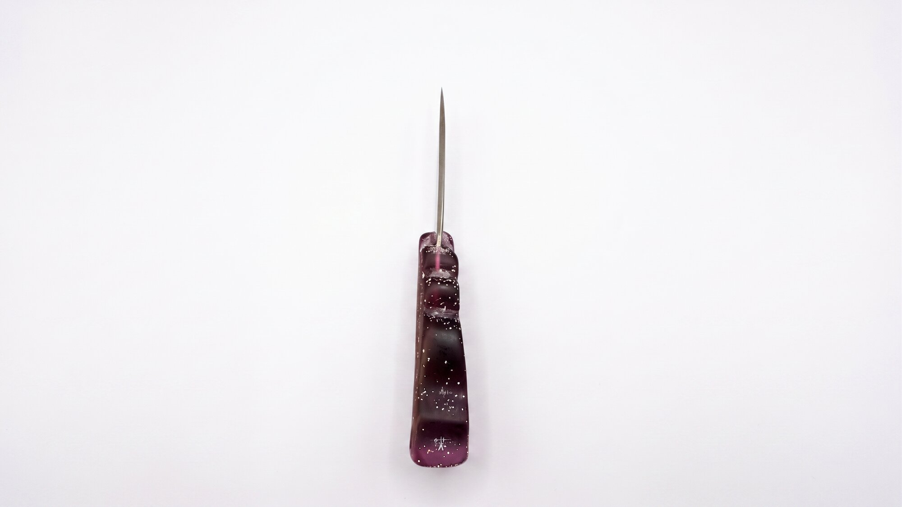
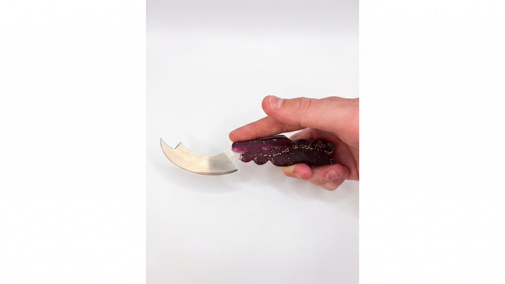
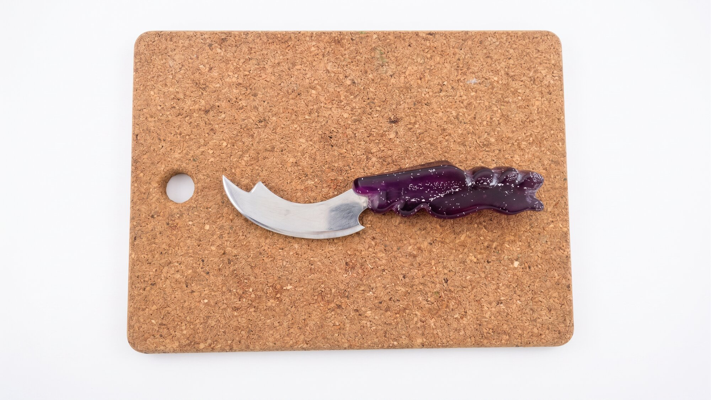

Le but du projet était de faire un couteau ergonomique pour ma propre main, et donc adapté à ma façon de le tenir. J'ai choisi de faire un couteau à fromage : la forme devait donc s'adapter à ma manière de couper le fromage.
Knibex est donc un couteau à fromage à pâte molle. La forme du manche s'inspire des nodosités, ou bourrelets, qui donnent cet aspect « bosselé » aux cornes des bouquetins.
Pour les matériaux, la lame est découpée dans une plaque d'inox, et le manche est coulé en résine époxy. J'ai choisi une teinte mauve/rose pour le manche, une couleur que l'on retrouve sur certaines fleurs en montagne.
Matériaux
- Lame en acier inoxydable
- Manche en résine époxy coulée